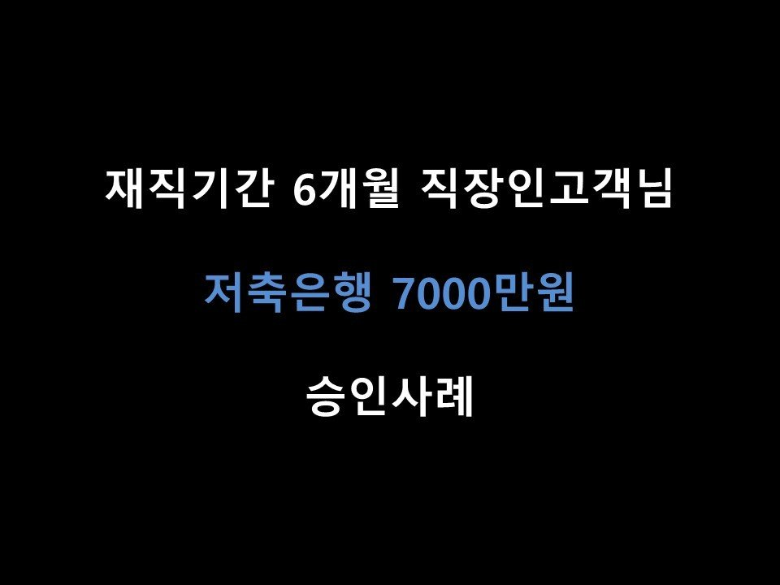
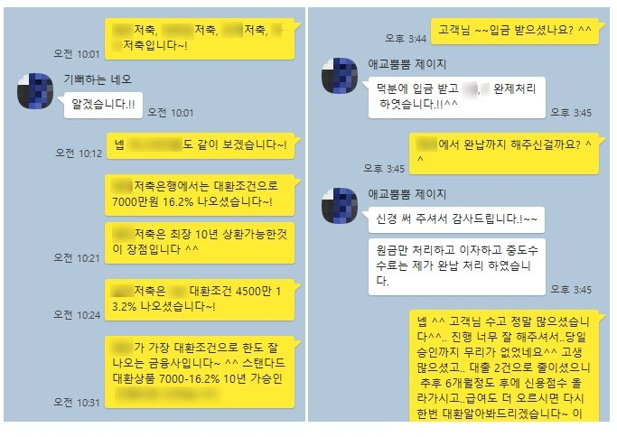

★재직기간 6개월 직장인 고객님 저축은행 7000만원 승인사례★

안녕하세요 ^^ 오늘은 직장인 고객님의 저축은행 7000만원 승인 사례를 소개해드리겠습니다 ^^
고객님께서는 현재 4대보험 가입된 직장에서 6개월간 근무하셨으며, 급여는 월 평균 385만원가량 수령하고 계셨습니다.
신용점수는 토스기준 643점이었으며, 이용중이신 대출로는 S저축 3280만원, J저축은행 2670만원, O저축은행 2600만원으로
8500만원이 넘는 채무를 갖고계셨습니다. 고객님께서는 대출 통합+추가자금이 필요하셔서 저희 뱅크앤론으로 연락을 주셨습니다~!
기존대출금액이 소득대비 2배에 달하고.. 신용점수도 낮으신편이었지만, 기존대출이 모두 작년에 이루어진것이라{최근대출(1~2달이내)은 심사시에 부정적인 영향이 있습니다.}
통합대출 충분히 가능하실듯해 통합대출취급하는 금융사중 승인률 좋은 금융사로 가조회를 도움드렸습니다~!
총 4곳을 조회해드린결과 P저축은행에서 S, J저축 대환조건으로 7000만원의 한도가 나오게 되었습니다^^.
금리는 함께 조회해드린 타 금융사 금리보다 높은 편이었지만.. 한도가 아주 크게 나왔고(타금융사 한도 4500만),
상환기간이 최장 10년으로, 월 불입금 부담이 비교적 적다는 장점이 있어 고객님께 안내드린 결과
고객님께서도 P저축으로 진행을 원하셨기에, 최종적으로 해당금융사로 심사 진행을 도움드렸습니다 ^^
고객님께서는 P저축은행의 한도로 S저축, J저축 두건을 상환하시고, 남은 자금 1000만원 가량은 가용자금으로 필요한 곳에 운용하시게 될 수있으셨습니다 ^^
아래는 저와 고객님의 상담내용의 일부입니다~ ^^ 참고 부탁드립니다.
감사합니다.
